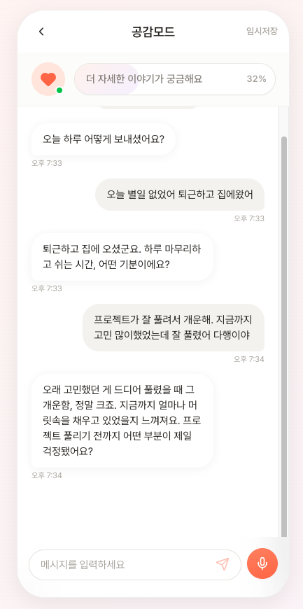
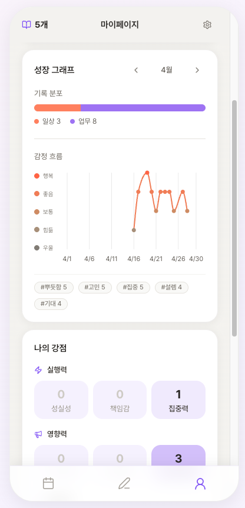

독서 유튜브 채널로 12,000명의 구독자를 모았고,
한 달짜리 독서 챌린지를 세일즈했고,
5개월간 운영했습니다.
그래서, 결과는?
독서챌린지를 피봇하게된 이유
5개월 × 5회 운영 / 객단가 ₩29,000 독서챌린지 / 평균 12.8명
독서챌린지로 깨닫게 된 것
독서 습관은 있으면 좋은 것이다
"지금 안 해도 당장 큰일 나는 일"이 아니었다.
그동안 비타민을 팔고있던 셈이다.
"책을 읽는 내 자신이 너무 대견스러워요"
80%이상 수료했고, 자신의 변화에 기뻐했다.
하지만 마음속에만 남은 뿌듯함은 재구매로 이어지지 않았다
습관이 진통제인 곳은 어느 시장일까?
AI가 지적노동을 대체하는 시대
인간만의 차별화 포인트는 판단력·회복탄력성·자기인식
= 모두 마음의 영역이다
Market Signals
글로벌 명상/마음챙김 앱 시장 연평균 성장률 (2024 → 2034). 북미 점유율 43% — 선진 시장에서 먼저 형성.
정신건강 이슈가 있는 사람 중 LLM을 치료 목적으로 활용하는 비율. 18~21세는 5명 중 1명이 AI 상담 경험.
국내 디지털 멘탈케어 시장 YoY 성장 (2023 $170.6B → 2024 $201B). 2030년 $558.2B 전망.
Why Diary?
일기·노트·블로그 등
기록하고 정리하는 행동을 하고 있다
생각을 정리하고 내일을 계획하는 용도로
매일 기록 습관을 들이려 노력 중
나 또한 흘러가는 생각을 잡아보려고
일기를 쓰고 있었다.
기록하려는 욕구는 이미 존재한다.
페인포인트는 그 노력을 결과물로 만들어주는 도구다.
Solution
인바디가 검증한 "문제 → 습관 → 결과물 → 습관 강화" 모델을
일기 서비스에 그대로 적용
꼬리질문으로 깊이를 끌어내는 AI.
혼자 쓰는 것보다 2배 깊은 성찰.
자유롭게 대화하면 깔끔한 일기로 전환
마이페이지에서 매일 갱신되는 강점·감정 패턴 카드.
심층 분석은 프리미엄 리포트로 차후 확장.
Why not the others
| 비교 대상 | 한계 | 레벨업 다이어리의 특징 |
|---|---|---|
| 일기 / 회고 앱 | 오늘 있었던 일, 감정, 사실의 나열 | 꼬리질문 대화로 성찰 깊이 ↑ |
| ChatGPT / Gemini | 휘발성 대화, 2차 자료로 생성되지 않음 | 일기 축적 → 매일 갱신되는 강점·감정 카드 제공 |
| 상담 / 진단 서비스 | 단발성 진단, 변화 추적 어려움 | 매일 기록, 변화 추적 가능 |
깊은 성찰 × 신뢰성 높은 데이터 축적 × 결과물
3가지 모두 충족시키는 서비스
Currently — Pre-launch
대상: 베타 모집을 통한 초기 사용자 약 50명
"내가 뭘 잘하는지 모르겠고,
제자리걸음 같다고 느끼는 분"
솔직한 피드백은 언제나 환영입니다